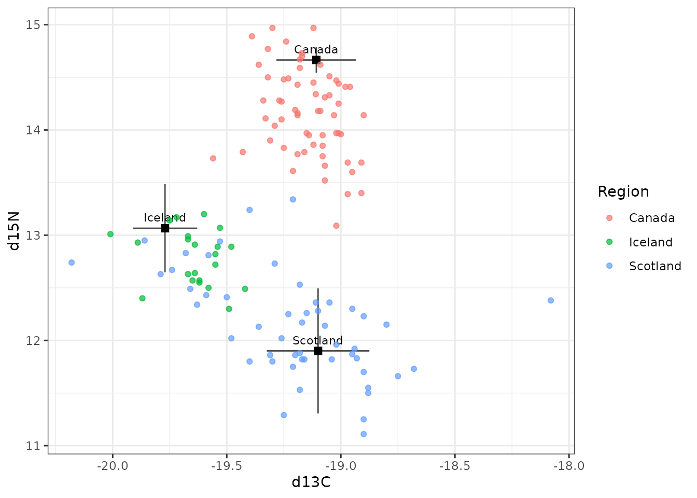
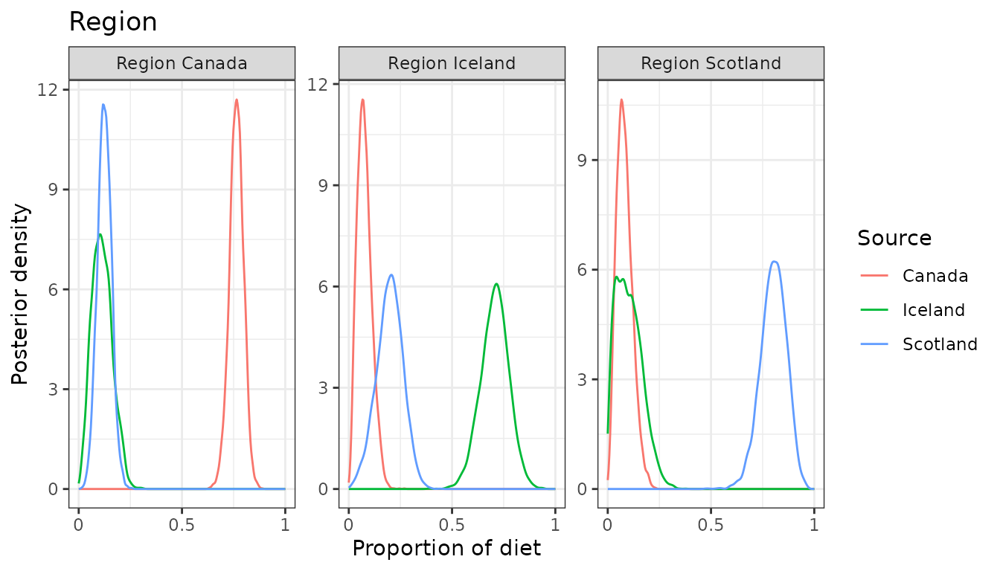
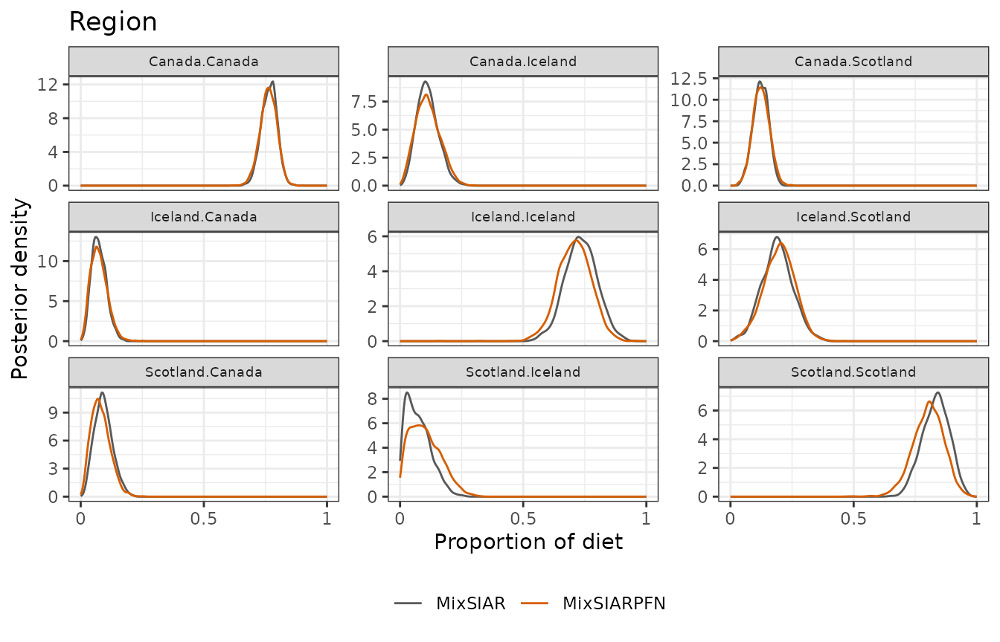
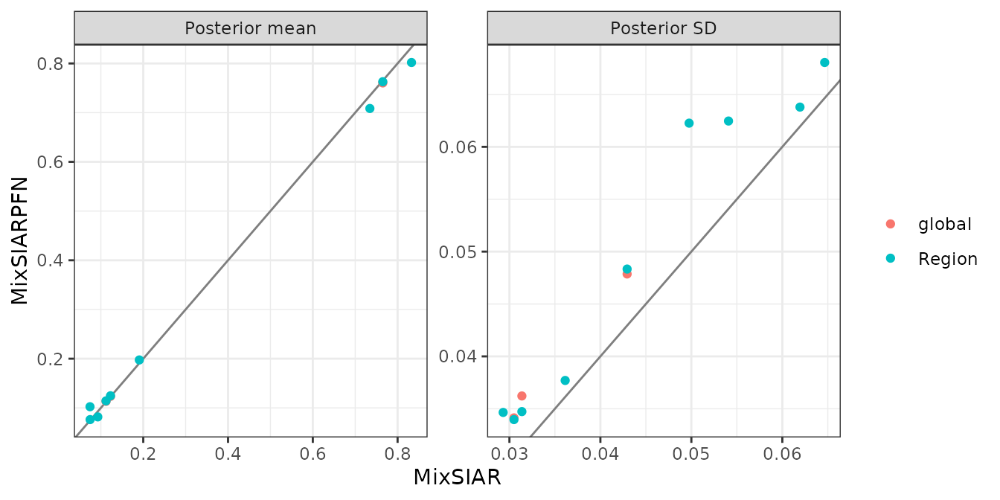

This follows MixSIAR’s storm petrel example script
(mixsiar_script_stormpetrel.R), based on Bicknell et
al. (2014). It uses a mixing model for movement rather than diet: the
“mixture” is juvenile (non-breeding) birds, caught in three regions (a
fixed effect), and the “sources” are adult (breeding) birds from three
colonies, in Canada, Iceland and Scotland. The model estimates what
share of the juveniles in each region are isotopically like each colony.
Discrimination is set to zero, since juveniles and adults feeding in the
same region should look the same. Two tracers (δ¹³C and δ¹⁵N), and the
source data are raw samples. Only the fitting call differs from
MixSIAR’s script: run_pfn() in place of
write_JAGS_model() and run_model().
The data
mix <- load_mix_data(
filename = system.file("extdata", "stormpetrel_consumer.csv", package = "MixSIARPFN"),
iso_names = c("d13C", "d15N"), factors = "Region", fac_random = FALSE,
fac_nested = FALSE, cont_effects = NULL)
source <- load_source_data(
filename = system.file("extdata", "stormpetrel_sources.csv", package = "MixSIARPFN"),
source_factors = NULL, conc_dep = FALSE, data_type = "raw", mix)
#> Raw source data summarised to means, SDs and sample sizes (Canada: n = 4; Iceland: n = 12; Scotland: n = 18).
discr <- load_discr_data(
filename = system.file("extdata", "stormpetrel_discrimination.csv", package = "MixSIARPFN"),
mix)load_source_data() summarises the raw source samples to
each source’s mean, SD and sample size, which is what MixSIARPFN’s
networks use:
source$data
#> Source Meand13C SDd13C Meand15N SDd15N n
#> 1 Canada -19.10750 0.1750000 14.66500 0.1215182 4
#> 2 Iceland -19.77083 0.1413865 13.06583 0.4191649 12
#> 3 Scotland -19.10000 0.2248660 11.90056 0.5943803 18There are 135 birds in 3 regions (Canada, Iceland, Scotland).
plot_data(mix = mix, source = source, discr = discr)
Fitting the model
Residual * Process error and MixSIAR’s uninformative Dirichlet prior, as in MixSIAR’s script.
time <- system.time(
fit <- run_pfn(mix, source, discr, alpha.prior = 1,
resid_err = TRUE, process_err = TRUE)
)
fit
#> MixSIARPFN fit (Residual * Process error), 3 sources, in 0.5 s
#> Marginal posteriors (no joint draws). Global diet:
#> source mean sd 2.5% 97.5%
#> Canada 0.760 0.036 0.687 0.828
#> Iceland 0.113 0.048 0.031 0.215
#> Scotland 0.123 0.034 0.058 0.192
#> Use output_pfn() for every proportion and parameter.Results
out <- output_pfn(fit, mix, source,
output_options = list(summary_save = FALSE, plot_post_save_pdf = FALSE))
knitr::kable(round(summary_table(fit), 3))| Mean | SD | 2.5% | 5% | 25% | 50% | 75% | 95% | 97.5% | |
|---|---|---|---|---|---|---|---|---|---|
| Epsilon.1 | 2.603 | 0.763 | 1.403 | 1.543 | 2.058 | 2.508 | 3.042 | 3.981 | 4.343 |
| Epsilon.2 | 1.212 | 0.454 | 0.547 | 0.618 | 0.891 | 1.141 | 1.454 | 2.040 | 2.276 |
| p.global.Canada | 0.760 | 0.036 | 0.687 | 0.700 | 0.738 | 0.761 | 0.785 | 0.817 | 0.828 |
| p.global.Iceland | 0.113 | 0.048 | 0.031 | 0.040 | 0.078 | 0.110 | 0.145 | 0.197 | 0.215 |
| p.global.Scotland | 0.123 | 0.034 | 0.058 | 0.068 | 0.100 | 0.123 | 0.146 | 0.180 | 0.192 |
| p.Canada.Canada | 0.763 | 0.035 | 0.692 | 0.705 | 0.741 | 0.764 | 0.786 | 0.818 | 0.828 |
| p.Canada.Iceland | 0.114 | 0.048 | 0.031 | 0.040 | 0.079 | 0.111 | 0.146 | 0.199 | 0.216 |
| p.Canada.Scotland | 0.125 | 0.034 | 0.059 | 0.069 | 0.102 | 0.124 | 0.147 | 0.181 | 0.193 |
| p.Iceland.Canada | 0.076 | 0.035 | 0.021 | 0.026 | 0.051 | 0.073 | 0.098 | 0.139 | 0.153 |
| p.Iceland.Iceland | 0.708 | 0.068 | 0.571 | 0.596 | 0.665 | 0.710 | 0.753 | 0.818 | 0.839 |
| p.Iceland.Scotland | 0.197 | 0.064 | 0.066 | 0.088 | 0.156 | 0.200 | 0.241 | 0.299 | 0.319 |
| p.Scotland.Canada | 0.082 | 0.038 | 0.021 | 0.027 | 0.054 | 0.078 | 0.105 | 0.149 | 0.164 |
| p.Scotland.Iceland | 0.102 | 0.062 | 0.011 | 0.016 | 0.052 | 0.095 | 0.144 | 0.215 | 0.238 |
| p.Scotland.Scotland | 0.802 | 0.062 | 0.671 | 0.695 | 0.762 | 0.805 | 0.846 | 0.899 | 0.914 |

Comparison with MixSIAR
ref <- mixsiar_reference("stormpetrel")
ref_raw <- mixsiar_reference("stormpetrel_raw")
blocks <- "Region"MixSIAR 3.1.12 fitted the same model to the same data with 3 chains of 300,000 iterations (burn-in 200,000, MixSIAR’s “long” run), which took 71 minutes (largest Gelman-Rubin diagnostic 1.005). MixSIARPFN took 0.5 seconds, about 8,000 times faster.
Means, SDs, 95% intervals and the Wasserstein-1 distance between the two posteriors (W1: how far, on average, one posterior’s mass has to move to match the other, on the proportion scale):
knitr::kable(data.frame(
quantity = cmp$name,
`MixSIARPFN mean` = round(cmp$pfn_mean, 3), `MixSIAR mean` = round(cmp$mixsiar_mean, 3),
`MixSIARPFN SD` = round(cmp$pfn_sd, 3), `MixSIAR SD` = round(cmp$mixsiar_sd, 3),
`MixSIARPFN 95% CI` = sprintf("%.2f to %.2f", cmp$pfn_q2.5, cmp$pfn_q97.5),
`MixSIAR 95% CI` = sprintf("%.2f to %.2f", cmp$mixsiar_q2.5, cmp$mixsiar_q97.5),
W1 = round(cmp$w1, 3), check.names = FALSE))| quantity | MixSIARPFN mean | MixSIAR mean | MixSIARPFN SD | MixSIAR SD | MixSIARPFN 95% CI | MixSIAR 95% CI | W1 |
|---|---|---|---|---|---|---|---|
| Epsilon.1 | 2.603 | 2.488 | 0.763 | 0.736 | 1.40 to 4.34 | 1.31 to 4.17 | NA |
| Epsilon.2 | 1.212 | 1.218 | 0.454 | 0.390 | 0.55 to 2.28 | 0.62 to 2.16 | NA |
| p.global.Canada | 0.760 | 0.765 | 0.036 | 0.031 | 0.69 to 0.83 | 0.70 to 0.83 | 0.005 |
| p.global.Iceland | 0.113 | 0.112 | 0.048 | 0.043 | 0.03 to 0.21 | 0.04 to 0.20 | 0.004 |
| p.global.Scotland | 0.123 | 0.123 | 0.034 | 0.031 | 0.06 to 0.19 | 0.06 to 0.18 | 0.003 |
| p.Canada.Canada | 0.763 | 0.765 | 0.035 | 0.031 | 0.69 to 0.83 | 0.70 to 0.83 | 0.003 |
| p.Canada.Iceland | 0.114 | 0.112 | 0.048 | 0.043 | 0.03 to 0.22 | 0.04 to 0.20 | 0.005 |
| p.Canada.Scotland | 0.125 | 0.123 | 0.034 | 0.031 | 0.06 to 0.19 | 0.06 to 0.18 | 0.002 |
| p.Iceland.Canada | 0.076 | 0.075 | 0.035 | 0.029 | 0.02 to 0.15 | 0.03 to 0.14 | 0.004 |
| p.Iceland.Iceland | 0.708 | 0.735 | 0.068 | 0.065 | 0.57 to 0.84 | 0.61 to 0.86 | 0.026 |
| p.Iceland.Scotland | 0.197 | 0.191 | 0.064 | 0.062 | 0.07 to 0.32 | 0.08 to 0.31 | 0.007 |
| p.Scotland.Canada | 0.082 | 0.093 | 0.038 | 0.036 | 0.02 to 0.16 | 0.03 to 0.17 | 0.011 |
| p.Scotland.Iceland | 0.102 | 0.074 | 0.062 | 0.050 | 0.01 to 0.24 | 0.01 to 0.19 | 0.028 |
| p.Scotland.Scotland | 0.802 | 0.833 | 0.062 | 0.054 | 0.67 to 0.91 | 0.72 to 0.93 | 0.031 |
for (b in blocks) print(plot_compare(fit, ref$draws, block = b))
plot_compare(fit, ref$draws, type = "means")
What this shows. MixSIARPFN’s diet proportions differ from MixSIAR’s by 0.010 on average (MixSIAR’s posterior SDs are about 0.04), the mean W1 between the two posteriors is 0.011, and the median ratio of their SDs is 1.12. The largest difference in a posterior mean is for p.Scotland.Scotland (0.802 against 0.833).
The source data here are raw samples, which MixSIARPFN summarises to each source’s mean, SD and sample size. MixSIAR’s own example fits the raw samples instead, estimating each source’s mean and variance in the model. That MixSIAR fit (165 minutes, largest Gelman-Rubin diagnostic 1.004) and MixSIAR’s fit to the summaries differ by 0.025 in posterior means on average. The comparison above is like for like: both methods fitted the same summaries.